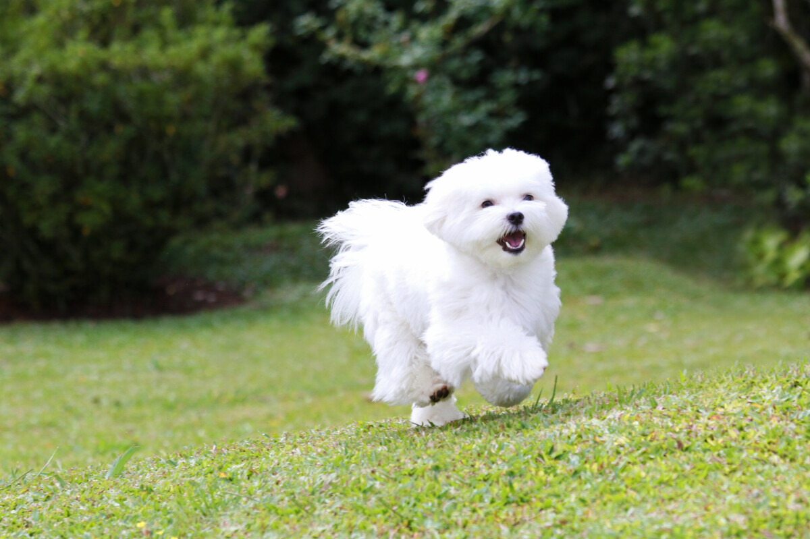

Hassam es un Bichon Maltes de 3 anos de edad. Es un perro alegre y carinoso, siempre lleno de energia y con muchas ganas de jugar. Su nombre, Hassam, lo distingue claramente, y su raza refleja su tamano pequeno, su pelaje blanco y su caracter amigable. Es un companero leal y dulce, que siempre busca la cercania de quienes lo cuidan y disfruta de la compania de su familia.